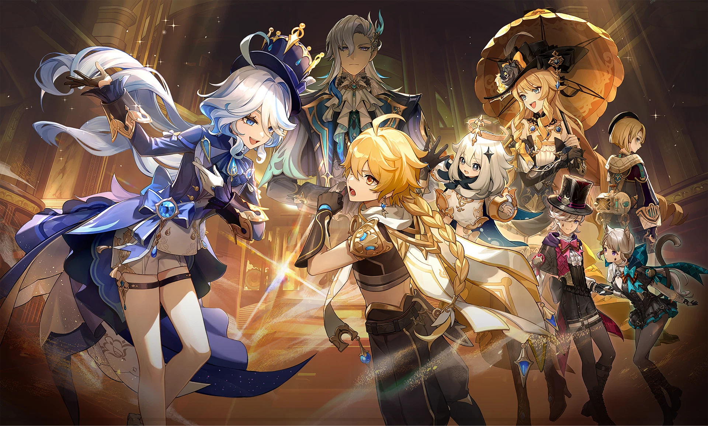

this is intro stuff
this is what happens when you don't indent
then everything is a blob
this is shirbo li's first official website
this is bolded
this one is in italic
--------------------------------------------------------------------------------------------------------------------------------------
this is lists
item 一
item 二
item 三
咱们就是说好像打中文也没问题诶
--------------------------------------------------------------------------------------------------------------------------------------
these are comments
but u cant see them lmao
--------------------------------------------------------------------------------------------------------------------------------------
onto links!
this is the best video on yt
link to oden project this is an absolute link
this is relative link that will lead you to the about.html that we made (its important to make sure it's in the right path)
--------------------------------------------------------------------------------------------------------------------------------------
this is an image!
